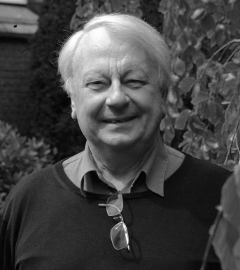

a g e n d a 2 0 0 9
Fevereiro
:. 12/fevereiro
Publicação do vol. 6, n. 2 dos CASA - Cadernos de Semiótica Aplicada
Março
:. 02 a 13/março
XIX Instituto de Linguística e VI Congresso Internacional da ABRALIN
João Pessoa, PB
Entre outras atividades interessantes, foi realizado um minicurso com o professor Denis Bertrand (Paris VIII)
Sítio da ABRALIN
:. 10/março
Início da disciplina de Pós-Graduação FLM5288,
A semiótica das paixões na construção
identitária contemporânea em estudos de língua
inglesa. Profa. Dra. Elizabeth Harkot de La Taille (FFLCH-USP)
:. 13/março
11h30 Reunião do LabOrES - Laboratório de Orientação em Estudos Semióticos
Coordenação do Prof. Dr. Waldir Beividas
Em discussão: A. J. Greimas, De la colère. In: Du Sens II
Sala 260 do prédio de Letras USP
O texto está disponível na pasta Xerox do LabOrES
:. 19/março
Início da nova disciplina de Pós-Graduação FLL5701, Teoria da narrativa e do discurso: desenvolvimentos atuais. Prof. Dr. Waldir Beividas (FFLCH-USP) 
:. 27/março
11h30 Palestra FAPS de Peter Dietrich
Semiótica do discurso musical: uma discussão a partir das canções de Chico Buarque
Prédio de Letras USP, sala 260
:. 31/março
Data-limite para propor artigos à ALFA - Revista de Linguística,
vol. 53, n. 2 (segundo semestre de 2009), número temático
sobre a abordagem semiótica do discurso, organizado pelos
professores Arnaldo Cortina e Renata Marchezan.
Abril
:. 03/abril
11h30 Reunião do LabOrES - Laboratório de Orientação em Estudos Semióticos
Coordenação do Prof. Dr. Waldir Beividas
Conclusão da discussão sobre A. J. Greimas, De la colère. In: Du Sens II
Sala 260 do prédio de Letras USP
O texto está disponível na pasta Xerox do LabOrES
:. 17/abril
11h30 Reunião do LabOrES - Laboratório de Orientação em Estudos Semióticos
Em discussão: A. J. Greimas, Le défi. In: Du Sens II
Clique para ver o handout e os slides elaborados pela estudante Eliane Pereira
Sala 260 do prédio de Letras USP
:. 24/abril
Data-limite para propor artigos à Revista da ANPOLL, n. 26:
"Espaço público e linguagens". As normas para
formatação podem ser consultadas aqui.
Maio
:. 08/maio
11h30 Double FAPS: Leland McCleary (DLM-FFLCH-USP) & Evani Viotti (DL-FFLCH-USP)
O verbal e o gestual na língua de sinais brasileira
Prédio de Letras USP, sala 260
:. 15/maio
11h30 Reunião do LabOrES - Laboratório de Orientação em Estudos Semióticos
Em discussão: A. J. Greimas, Conditions d'une sémiotique du monde naturel. In: Du Sens I
Sala 264 do prédio de Letras USP
:. 22/maio
Data-limite para propor artigos à
Revista da ANPOLL, n. 27: "Multimodalidade e intermedialidade,
abordagens linguísticas e literárias". As normas para
formatação podem ser consultadas aqui.
:. 25 a 28/maio :. 05/junho :. 20/junho
:. 26/junho
:. 06 a 08/julho
:. 06 a 09/julho :. 21/agosto :. 28/agosto Setembro :. 11/setembro :. 18/setembro
Das 14 às 17 h: Semiótica Seminal III
Questões contemporâneas em semiótica: a tensividade e o acontecimento
Profa. Dra. Renata Mancini (SeDi, UFF - Niterói, RJ)
Prédio de Letras USP, sala 266
:. 29/maio
11h30 Palestra FAPS de Renata Mancini
A tradução intersemiótica: questões de enunciação e do plano da expressão
Prédio de Letras USP, sala 266
Junho
11h30 Reunião do LabOrES - Laboratório de
Orientação em Estudos Semióticos
Em discussão: A. J. Greimas, Conditions d'une sémiotique du monde naturel. In: Du Sens I
Sala 260 do prédio de Letras USP
I Jornada de Estudos Semióticos do Grupo CASA
Tema: Semiótica e Retórica
FCL-UNESP, Araraquara
11h30 Palestra FAPS de Ronald Beline Mendes (DL-FFLCH-USP)
Índices linguísticos de uma fala "gay" masculina e a construção de um significado social
- palestra adiada em razão da greve -
:. 30/junho
Lançamento do vol. 5, número 1 da revista  Estudos Semióticos on-line, que passa a ter periodicidade semestral
Estudos Semióticos on-line, que passa a ter periodicidade semestral
Julho
57o Seminário do Grupo de Estudos Linguísticos, celebrando os 40 anos da fundação do GEL.
Inscrições abertas no sítio do evento.
Ribeirão Preto, SP
XXX Colloque International d'Albi "Langages et Signification". Tema geral: "Écritures évolutives"
Albi, França
Agosto
:. 01/agosto
Data-limite para propor trabalhos ao vol. 7, n. 2 (dezembro/2009) dos CASA - Cadernos de Semiótica Aplicada
11h30 Palestra FAPS de Lynn Mario Menezes de Souza (DLM-FFLCH-USP)
Da fala à visão: pensando letramentos visuais indígenas
Prédio de Letras USP, sala 260
11h30 Reunião do LabOrES - Laboratório de
Orientação em Estudos Semióticos
Conclusão da discussão: A. J. Greimas, Conditions d'une sémiotique du monde naturel. In: Du Sens I
Sala 260 do prédio de Letras USP
11h30 Reunião do LabOrES - Laboratório de
Orientação em Estudos Semióticos
Em discussão: Sémir Badir, Sémiotique et langage. Une présentation historico-épistémologique
Sala 260 do prédio de Letras USP
Prazo limite para inscrever comunicações no VIII miniENAPOL de Semiótica FFLCH-USP
11h30 Reunião do LabOrES - Laboratório de
Orientação em Estudos Semióticos
Continuação da discussão: Sémir Badir, Sémiotique et langage. Une présentation historico-épistémologique
Sala 260 do prédio de Letras USP
X Congresso Mundial de Semiótica
A Coruña, Galícia.
Comemoração dos 40 anos de criação da
Associação Internacional de Semiótica (Paris,
1969).
:. 25/setembro
11h30 Palestra FAPS de Ronald Beline Mendes (DL-FFLCH-USP)
Índices linguísticos de uma fala "gay" masculina e a construção de um significado social
Prédio de Letras USP, sala 260
Outubro
:. 05 a 07/outubro


VIII miniENAPOL de Semiótica FFLCH-USP
Clique aqui para maiores informações
:. 08 e 09/outubro

III SEMinário de SEMiótica na USP
Clique aqui para saber mais
:. 08 e 09/outubro
FFLCH-USP: Encontro Intermediário do GT de Semiótica da ANPOLL
:. 15 a 18/outubro
2009 Annual Meeting, Semiotic Society of America (Thomas Broden, presidente)
Cincinnati, Ohio, EUA
:. 30/outubro
11h30 Palestra FAPS de Roberto Zular (DTLLC-FFLCH-USP)
Ritmo e oralidade na poesia brasileira
Prédio de Letras USP, sala 260
Novembro
:. 06/novembro
11h30 Reunião do LabOrES - Laboratório de
Orientação em Estudos Semióticos
Em discussão: Sémir Badir (inédito), Chapitre III: Sémiotique
Sala 260 do prédio de Letras USP
14h - 17h Sémir Badir: Práticas teóricas. Abordagens críticas da semiótica. :. 19/novembro

17h30 - 19h15 Herman Parret: A espacialização háptica. De Deleuze a Riegl, de Riegl a Herder.
:. 24/novembro
15h00 Mesa-redonda com Sémir Badir: "Por que Hjelmslev hoje?"
Sala 266 do prédio de Letras USP
11h30 Palestra FAPS de Marilda Franco de Moura Vasconcelos (Universidade do Porto, Portugal)
Da desconstrução do anúncio publicitário sincrético à produção de textos narrativos
Prédio de Letras USP, sala 261
15h00 Franciscu Sedda: Interseção de linguagens, explosão de mundos. Uma rima fundadora entre Lotman e Greimas. :. 30/novembro
Lançamento do vol. 5, número 2 da revista
 Estudos Semióticos on-line.
Estudos Semióticos on-line.